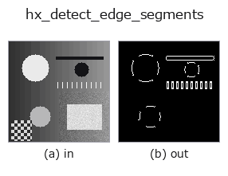

halcon_ext op• Data kinds: image → region
• Call: fullseye.apply(img, "hx_detect_edge_segments", a=0.5, b=0.5) (2-D model = एक image + दो scalar knobs a,b∈[0,1])
• HALCON समकक्ष: detect_edge_segments (अर्थ और parameters समझने के लिए HALCON reference उपयोगी है)

*Figure synthetic 128×128 input पर सच में चलाकर मिला output है। बाईं ओर input, दाईं ओर output। Point clouds ऊपर से देखे गए scatter के रूप में (brightness = z), 1-D series line के रूप में, volumes z दिशा में maximum-intensity projection के रूप में, videos बीच के frame के रूप में, complex images amplitude के रूप में, और जो return values चित्र नहीं बन सकते वे स्वयं values के रूप में दिखाए जाते हैं।*
Knob a को बदलकर (0.1 / 0.5 / 0.9, दूसरा knob default पर):
▸ hx_detect_edge_segments: knob a को बदलने का figure (docs site)
Knob b को बदलकर (0.1 / 0.5 / 0.9, दूसरा knob default पर):
▸ hx_detect_edge_segments: knob b को बदलने का figure (docs site)
दूसरी images पर भी (synthetic scene / photo / coins। ऊपर की row में inputs, नीचे की row में उनके outputs। Knobs default पर):
▸ hx_detect_edge_segments: दूसरी images पर output (docs site)
*चौथा column colour (H,W,3) input है। यह op channels को पार किए बिना colour संभालता है (colour channel को तीसरे spatial axis की तरह convolve नहीं करता)।*
सीधे edge टुकड़े पहचानता है: NMS से पतला करना → connected components में से PCA से लंबे-पतले (रेखीय) वालों को रखना।
> नीचे का विस्तृत विवरण मूल text में है — सारांश और headings का अनुवाद हो चुका है।
hx_nonmax_dir(v, a, 0) で細線化したエッジ(> 0)を 8 近傍で連結成分に分け、各成分の画素座標の共分散固有値比 λmax/λmin が min_ratio 以上のもの(細長い=直線状)だけを 1 とする 0/1 の float region を返す。
• a → 細線化段の弱エッジしきい値(hx_nonmax_dir の a と同じ。正規化振幅 a*0.3 未満を捨てる)。
• b → 細長さのしきい値 min_ratio = 3 + b*12(3〜15)。大きいほど真っ直ぐな断片だけ残る。
• 画素数 5 未満の成分は無条件に捨てる。λmin がほぼ 0(完全な直線)なら比を無限大として採用する。
注意: 直線性の判定は「点群の広がりが 1 軸に偏っているか」であり、曲線でも十分細長ければ通る。細線化段が斜めエッジをほとんど細線化しない(hx_nonmax_dir の注記参照)ため、斜めのエッジは幅を持った塊になり固有値比が下がって落とされやすい。連結成分単位なので、交差した線は 1 つの成分として比が下がる。後段で線分ごとに扱うなら hx_region_to_label や hough_line_trans。
खाली frame (मापा गया): एक समान brightness वाली image देने पर brightness चाहे जो हो, परिणाम खाली होता है (सभी pixels background 0)। पूरी सफ़ेद हो या पूरी काली, एक जैसा व्यवहार होता है; केवल brightness से कुछ detect नहीं होता।
• gallery2d_halcon_ext family guide
• Sample data catalog (DL URL / license) — 2-D के लिए skimage.data (BSD/public) + synthetic, 3-D के लिए real data sources (Stanford/PDS आदि) के DL URL।
• Operators का स्रोत और संदर्भ — इस op family के मूल research/methods के स्रोत।
• Algorithm का मानक स्रोत (लेखक, वर्ष) और उपयोग ऊपर की family usage guide में दिए गए हैं।
नीचे का program सच में चलता है, यह जाँचा गया है (figure वाला ही input)। Studio की help में यह block buttons बन जाता है, जिनसे इसे वहीं load करके चलाया जा सकता है।
hx_detect_edge_segments 0.50 0.50
▸ यह pipeline load करें · Load करके चलाएँ
• find_ops_by_meaning — py -3.11 examples/find_ops_by_meaning.py
• gallery2d_halcon_ext — py -3.11 examples/gallery2d_halcon_ext.py
region को input के रूप में लेते हैं)identity · reg_erode · reg_dilate · reg_open · reg_close · fill_holes · select_largest · remove_small
halcon_ext)hx_gen_circle · hx_gen_ellipse · hx_gen_rectangle2 · hx_gen_checker_region · hx_gen_grid_region · hx_gabor · hx_fit_surface1 · hx_fit_surface2
*Provenance: ops.py — 2D operator registry. यह per-op note tools/opdocs.py md से अपने-आप generate होता है (हाथ से edit न करें)।*
© 2026 Kazufumi Furuse — Fullseye operator documentation. Licensed under Apache-2.0.